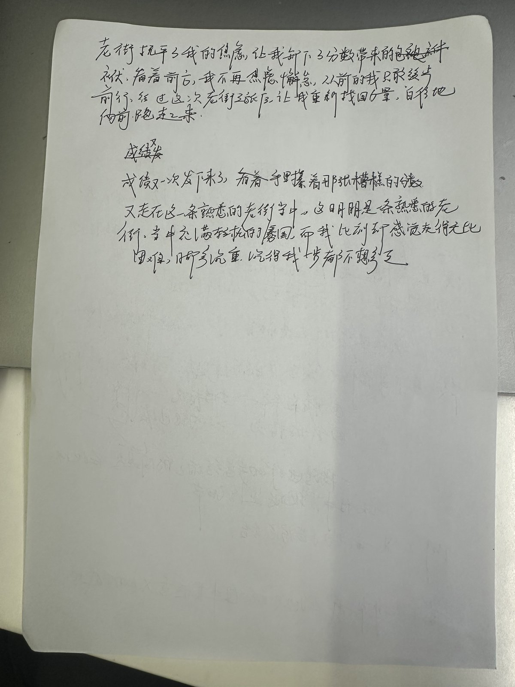

写作前 · 框架构思
构思先行
动笔之前，浩轩先做了框架构思，把整篇文章的「骨架」搭好：
- 开头：设定周末进入老街，观察各色人间烟火，总结引出下文，主题定为「成长」
- 中间（经过）：回忆小时候与奶奶在老街的所见所闻，通过「回家做桂花糕」引出主题「生命平凡且温柔」
- 过渡：又一次独自走进老街，完成内心变化衔接，并列出 3 个核心事例（卖豆腐脑的阿姨、擦鞋爷爷、我的情况）
- 后续：用一段话初步总结自身改变，发现旅程中的生活细节
- 升华落点：在此次旅程中完成了真正意义上的成长
💡 规范点：先搭骨架再填血肉，是作文训练的第一步，也是「作文六要」里强调的成文习惯。
写作进行 · 成稿与自评
落笔成稿按构思完成全篇写作。作文题为 《这段路，我想跑起来》，全篇写在方格作文纸上，共两页。写完后浩轩对照标准自评 42 分（满分 45 分）。


写完全篇后主动对照评分标准自评打分，这是「自我复盘」意识的体现 —— 知道自己写得怎样，才能知道往哪改。
AI 批改与提升建议
精准诊断作文批改与提升建议
先点赞：你的观察力（五感运用）非常棒
读完你的作文，我最喜欢的是你对老街「烟火气」的描写。油条「咕嘟咕嘟」冒泡、空气中的「焦香」、晶莹的露珠，这些细节证明你有着非常敏锐的 观察力（五感运用得很棒）！
综合来看，目前这篇作文整体处于 「Developing（二类文中档）」 的水平。
专项诊断：开头的「突兀感」从何而来？
你的开头很「突兀」。在考场上，这个开头会在「扣题」和「真实感」上吃亏。主要原因有两个：
- 1. 悬空起笔，未扣题眼。
题目是《这段路，我想跑起来》，但第一段完全没有出现「路」的概念（虽然提到了石板小路，但没有强调「这段路」的特殊性），也没有「想跑起来」的动作铺垫。这就好比观众还没看到起跑线，你已经开始念感悟了。
下一步行动：开头需要「一刀切入」点明「这段路」是什么路（比如：每天上下学必经的路、充满压力的路等）。 - 2. 结论前置，语言过「重」。
「一次次击碎我年少追求功名利禄的心，教我重新定义成长的意义。」这句话有两个问题。第一，「追求功名利禄」对于初中生来说太成人化、太沉重了，不够真实；第二，第一段就把文章的最终感悟全都「剧透」了，导致后面的回忆失去了层层递进的张力。
下一步行动：尝试把结论藏起来（留白），用指南里提到的「场景式开头」或「对比式开头」，先交代你当时的心境。
能不能尝试先描绘你带着糟糕的成绩，走在这条熟悉的老街（这段路）上，步伐沉重的样子？
「手里攥着那张分数少得可怜的试卷，我走在这条每天必经的石板小路上。这明明是一条熟悉的老街，此刻却觉得这条路好长、好沉，沉得我一步都不想多走……」
你看，这样是不是既扣了「路」，又写出了你真实的压力，同时和结尾的「想跑起来」形成了鲜明的对比？
核心成长点与修改建议
成长点 1 紧扣核心题眼：把「走」变成「跑」（立意升华）
- 原文表现：结尾写道「这次行走让我在学习这一段路本上越走越稳，安稳从容地奔赴成长前路。」
- 问题诊断：题目是《这段路，我想跑起来》，但文章通篇都在强调「慢」「从容」和「越走越稳」，完全没有呼应「跑起来」这个动作和冲动。在考场上，这会存在偏题的风险（立意扣分严重）。
- 下一步行动：尝试把「老街的治愈」作为「重新出发的燃料」——老街的从容让你放下了焦虑，但并非让你止步不前，而是让你重新找回了热爱，从而充满力量地「跑起来」。
成长点 2 缝合逻辑断层：让「顿悟」更自然（体验与共情）
- 原文表现：看到卖豆腐脑的阿姨、擦鞋大爷、裁缝奶奶后，「我捧着一碗滚烫的豆腐脑坐在路边，瞬间幡然醒悟……认为分数才是自我价值的全部，却忽略了学习当中的诸多美好。」
- 问题诊断：这里的「顿悟」有些突然。为什么看到手艺人认真工作，就会让你突然联想到「学习中的美好」？这两者之间缺少了一座「桥梁」。
- 下一步行动：运用指南中提到的「移情」和「联想」，把这些手艺人做事的态度，映射到你学习的态度上。
小贴士：错别字与卷面
第二页倒数第二行：「案稳从容」应该是「安稳从容」。在考场上每 3 个错别字会扣 1 分，写完记得一定要留出 3 分钟检查哦！
下一步行动
- 用「引导思考」里的思路，写一个三四句话的开头，把「沉重的步伐」和「这段路」点出来。
- 按照上面的建议，重新构思并写一下文章的最后一段，让它精准扣住「我想跑起来」这个题目。
按建议重写 · 开头与结尾片段
落实修改拿到 AI 建议后，浩轩针对「开头突兀、未扣题眼」和「结尾未呼应跑起来」两个核心问题，动手重写了开头和结尾片段。批改 → 修改 → 再打磨，这就是作文能力提升的关键闭环。

✗ 修改前
开头（原）：「周末清晨，我随奶奶穿过青石板小路……市井中的朴素生活一次次击碎我年少追求功名利禄的心，教我重新定义成长的意义。」
结尾（原）：「……这次行走让我在学习这一段路上越走越稳，沉稳从容地奔赴成长前路。」
问题：未扣题眼、结论前置、没有呼应「跑起来」✓ 修改后
开头（新）：「成绩又一次发下来了，看着手里攥着那张糟糕的分数，又走在这一条熟悉的老街当中，这明明是条熟悉的老街，当中充满轻快的氛围，而我此刻却感觉走得无比困难，脚步沉重，沉得我一步都不想多迈。」
结尾（新）：「老街抚平了我的焦虑，让我卸下了分数带来的包袱，看着前方，我不再焦虑懈怠，从前的我只敢缓步前行，经过这次老街之旅后，让我重新找回力量，自信地向前跑起来。」
进步：扣住「这段路」、写出真实压力、结尾呼应「跑起来」日常作文训练规范 · 照着做
形成习惯这次训练展示了标准流程。以后每一次作文训练，都按以下五步来，形成规范习惯：
动笔前先搭框架：开头写什么、中间几个事例、过渡怎么衔接、升华落在哪。不构思不动笔。
写完对照评分标准给自己打分，并写下理由。自评是自我复盘的第一步。
让 AI 按中考评分标准诊断立意、结构、语言，拿到具体的修改建议。
针对指出的问题，重写开头、结尾或逻辑断层处，把建议真正落到文字里。
留出 3 分钟检查错别字与卷面。规范即分数，细节见功夫。
全程对照《初中语文作文底层能力训练完整指南（作文六要）》，让每一篇都练在方法上。